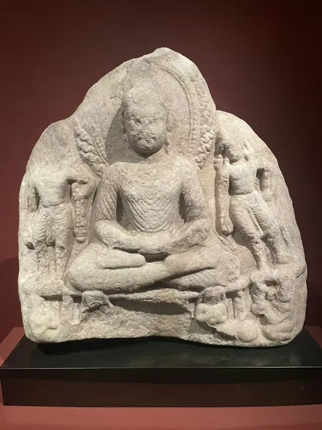
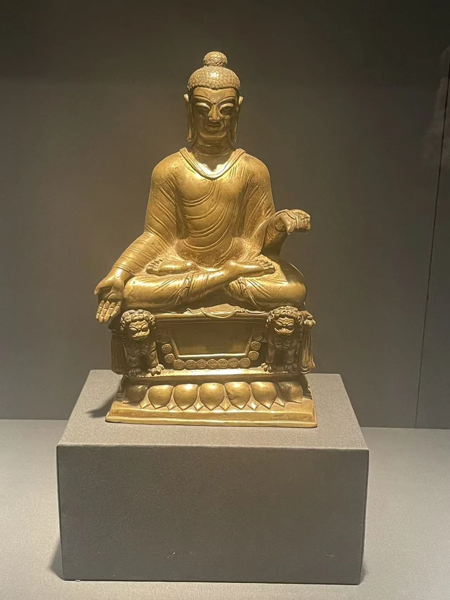
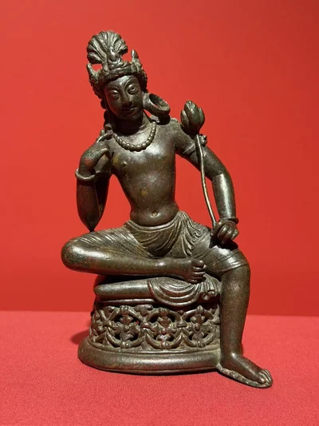
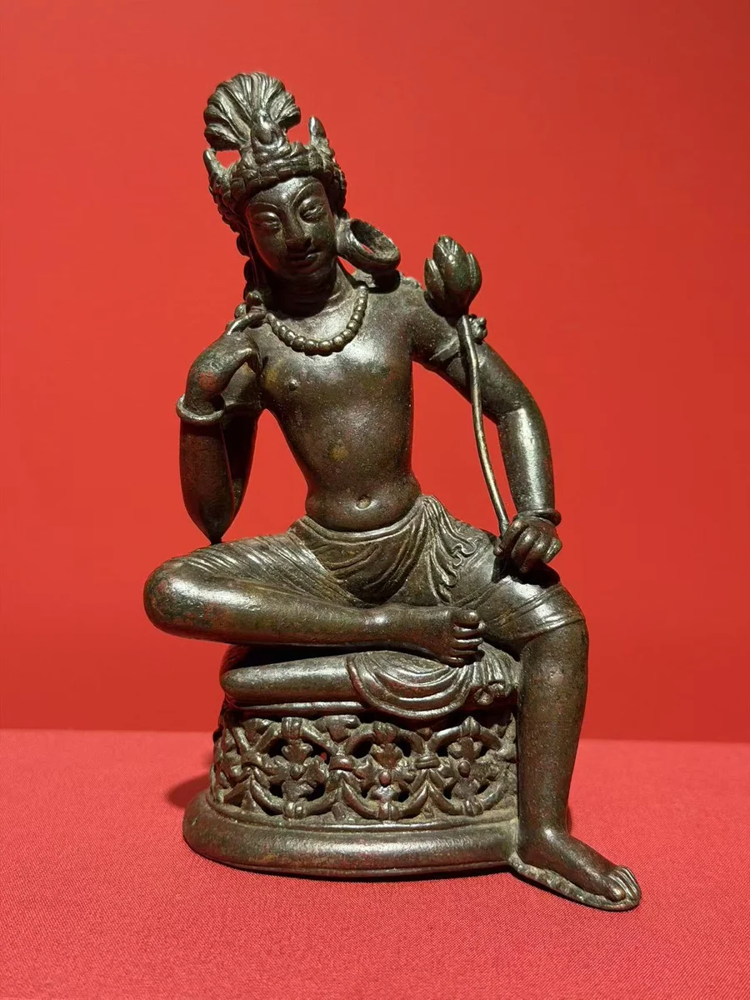

佛与二菩萨禅定像
纽约大都会艺术博物馆
01 / CLOSE LOOKING

这尊吉尔吉特佛像的底座留下了王后 Mangalahamsika 的供养记录。约600年的金属身体因此与一个具体的人相连。把它与斯瓦特的大理石三尊像、持莲观音并看，先留意座具、身体的体量和手势；这些差异比一个笼统的“早期风格”更能打开地域问题。 [01] [02]
细看：王后供养铭文所在的底座；佛像手势与两侧空间；大理石三尊像的层次。

纽约大都会艺术博物馆

虚舟收藏（The Xuzhou Collection of Buddhist Art） · 在休斯顿美术馆展出
图片按各自比例展示，实物不等大。
大理石
[02]
铜合金嵌银
作品基本资料据现场展签及下列馆方记录整理；文字中的观看描述基于这里的现场照片。